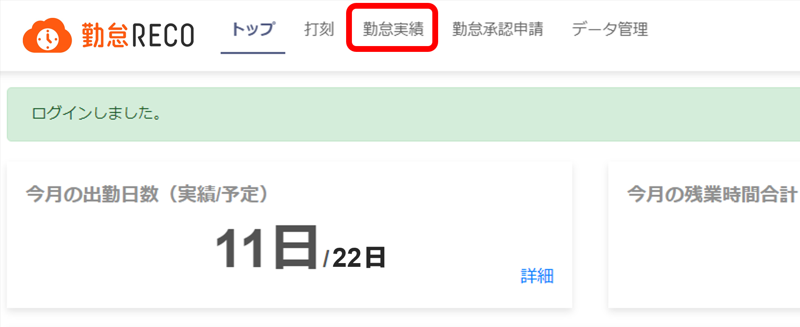
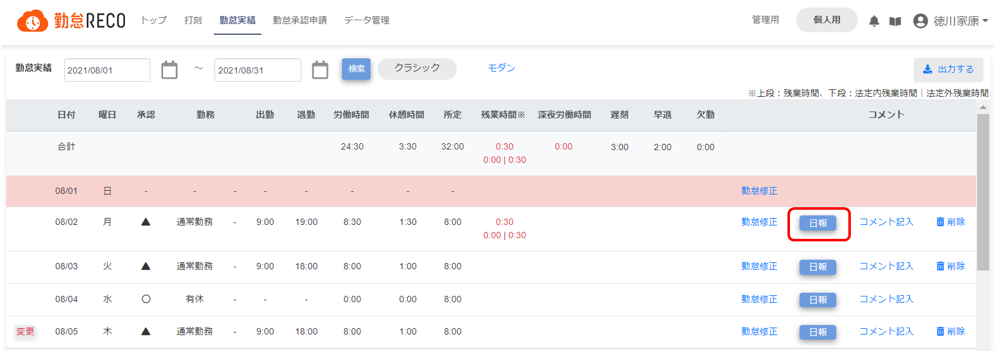
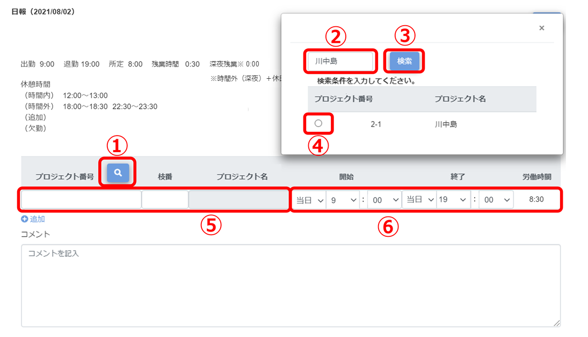
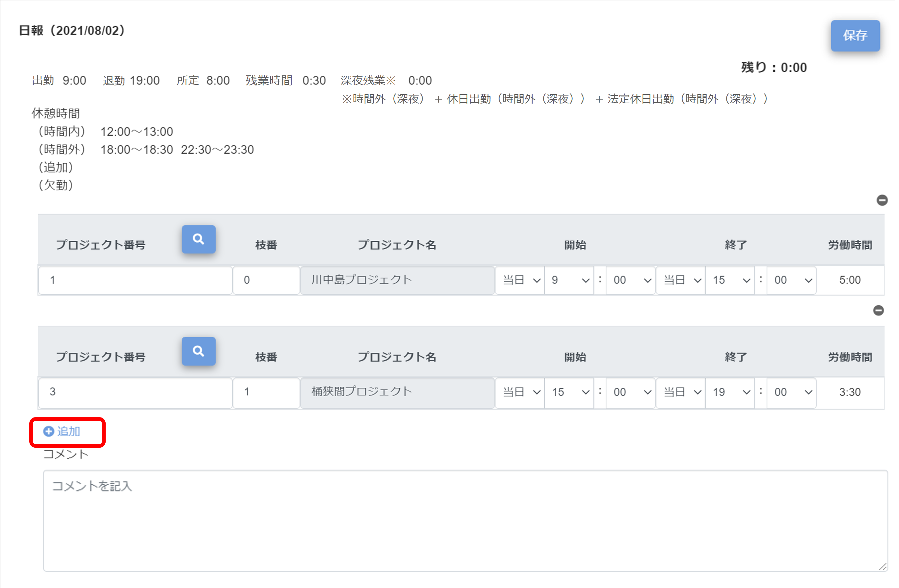
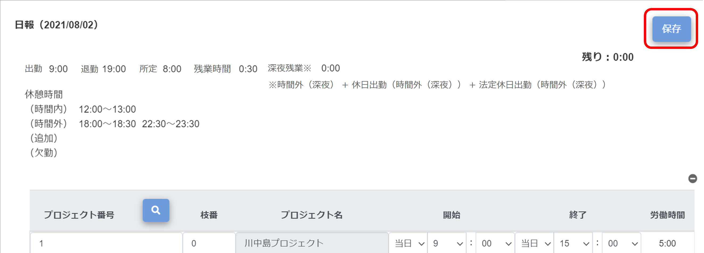

日報やプロジェクト別工数を入力する
勤務した日の日報やプロジェクト別の工数を記録することができます。
社内のプロジェクト別の工数は、［日報］でデータ入力しておくことで管理できます。
入力した工数を確認する方法は、「工数実績一覧表を作成する」を参照してください。
※管理者によるプロジェクトの設定について詳しくは、「勤怠RECO［管理用］操作マニュアル」をご覧ください。
ヒント |
［従業員マスタ］で初期プロジェクトが登録されている場合、出勤・退勤の打刻を行うと、プロジェクト開始日時・終了日時が日報に自動で登録されます。 |
|---|
-
［勤怠実績］をクリックする

［勤怠実績］画面が表示されます。
-
日報を作成したい日の［日報］ボタンをクリックする

［日報］画面が表示されます。
-
プロジェクト（⑤）、工数（⑥）を入力する
-
≪手順≫
プロジェクト番号が不明な場合
 をクリック（下図①）
をクリック（下図①）表示されるウィンドウにプロジェクト名を入力（下図②）して［検索］をクリック（下図③）
プロジェクト番号が表示されたら、左の○をクリック（下図④）
プロジェクト名が表示されます（下図⑤）プロジェクトにかかった工数を入力する（下図⑥）

労働時間には、開始日時、終了日時の範囲から休憩時間を差し引いた時間が表示されます。
-
-
プロジェクトを複数登録する場合は、［追加］ボタンをクリックする

プロジェクトの開始日時、終了日時の範囲が重複しないように登録します。
追加した行を削除する場合は、ボタンをクリックします。
-
社内の規約に沿い作業内容などを「コメント」欄に入力する
コメントは勤怠実績一覧の［コメント記入］からも入力できます。
-
［保存］をクリックする

-
日報が登録されると［日報］画面が閉じ、勤怠実績一覧の画面上部に「更新が完了しました。」とメッセージが表示されます。
-
日報を入力すると、勤怠実績一覧の［日報］ボタンが青からグレーに変わります。
-
コメントを入力すると、勤怠実績一覧の［コメント記入］が青からグレーに変わります。
-
ヒント |
［従業員マスタ］で固定承認者が設定されていない場合は、日報に登録された各プロジェクトの承認者が勤怠を承認します。 |
|---|